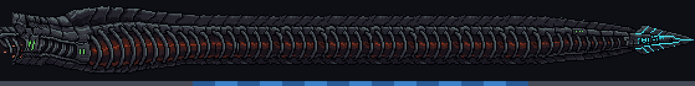
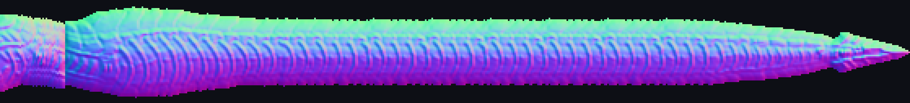
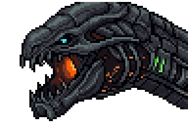
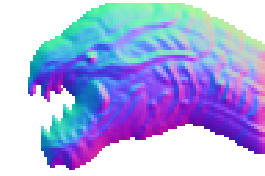

A enguia colossal: os anéis
07/11/2026 · plano plans/2026-11-07-serpente-grande-enguia.md, Parte B, passo 1 · a arte aprovada (F1 + E3) no movimento aprovado · fora do jogo, nada instalado.
Rodada 6: o rolar de volta, atrás do crânio, a raspada só com faíscas e fumaça
- O rolar voltou em todas as viradas (você: "estava muito natural, com o movimento de uma serpente mesmo"), como na rodada 4, e o mergulho voltou ao caminho de antes, para ela rolar na descida. A curva da chegada continua mais lenta. O estalo da cabeça trocando de lado fica para a etapa do PixelLab: as vistas extras da cabeça vão deixá-la girar de forma natural junto com o corpo.
- A textura atrás do crânio (no Eco final, quando a cabeça gira para seguir a nave): era o pedaço de pele que eu tinha posto por baixo do crânio para fechar a fenda. Agora só fica a faixa do meio dele, que fecha a fenda e nunca aparece por cima. Abaixo, três quadros do Eco final.
- A raspada: saíram as bordas acesas (a solda) e o clarão parado. Ficaram mais faíscas, mais fumaça, as gotas fundidas e as lascas.

A entrada no rombo (ajuste): a queda do mergulho passa ~12 px mais para a direita e entra mais pelo meio do buraco. As faíscas e a fumaça saem da linha onde o corpo some atrás da borda (o lugar do clipe), em mais pontos, e duram mais: cada ponto continua fumegando e soltando algumas faíscas por ~1,2 s depois que o corpo passou. A fumaça grossa faz a maior parte do trabalho de esconder. Abaixo, a entrada a cada 0,4 s (22,6 · 23,0 · 23,4 · 23,8 s).

Rodada 5 (registro): a girada da chegada, as viradas fora da tela, a solda, o gêiser e a ferida
- A girada da cabeça na chegada (4–5 s) estava rápida e seca. Duas causas: a curva do arco era fechada, e a cabeça (rígida) trocava de lado de um quadro para o outro bem ali. Agora a curva começa antes e é mais aberta, e ela desacelera para contorná-la (160 → 100 px/s, sem tranco) e retoma depois. A cabeça leva ~1,2 s para girar de "olhando para a esquerda" a "olhando para baixo".
- O movimento estranho das giradas (as suas 3 fotos) era ela virando de lado à vista, com o corpo rolando em leque. Agora toda virada de lado acontece fora da tela: abaixo da borda de baixo, dentro do buraco, acima da tela. A queda do mergulho no rombo ficou mais íngreme, para ela entrar sem virar. Na luta inteira nenhuma virada acontece à vista.
- A raspada virou solda: só na faixa de metal em volta da borda do buraco, onde o corpo atravessa a borda. O metal derrete em manchas que mudam a cada quadro, esfria aos poucos (branco, amarelo, laranja, vermelho) e deixa uma marca de queimado que vai sumindo. No contato, a cada quadro: um clarão desenhado por cima do corpo (esconde que ele atravessa a borda), chuva de faíscas na direção do movimento, gotas de metal fundido, lascas da própria placa voando e fumaça.
- O gêiser sai só da rachadura para cima: sem o reflexo para baixo. O perigo vai da rachadura (y ~168) até o alto, então quem se esconde sob a crista (y 151) continua sendo pego.
- A textura atrás da cabeça mordida: a mordida no crânio (5%) deixava ver o que estava atrás. Agora ela é uma ferida: carne escura com brasas, borda rasgada, nunca um buraco vazado.
A chegada, a cada 0,6 s (4,0 · 4,6 · 5,2 · 5,8 s):


A raspada: a solda na borda do buraco, as faíscas e os clarões no contato

Logo depois: a solda esfriando aos poucos

O gêiser só da rachadura para cima

A mordida no crânio como ferida
Rodada 4 (registro): as placas, a borda incandescente e o veneno
- As placas esticadas na virada (cilindro): no meio da virada a projeção espremia as poucas linhas das placas de cima por toda a largura do corpo, e virava riscos. Agora, no meio da virada, a textura é lida pelo comprimento ao redor do cilindro. As placas passam pela frente na ordem, esticando no máximo ~1,6×, e nas pontas da virada volta a ser a arte como foi desenhada.
- A borda raspada fica incandescente: onde o corpo encosta na borda do rombo, o metal esquenta (o calor se acumula enquanto ela raspa): branco, amarelo, laranja e vermelho-escuro, até voltar ao normal em ~2 s. As faíscas continuam.
- O gêiser de veneno, melhor: o veneno escorre para cima na coluna, as bordas se agitam em ondas, sobem bolhas, e no topo forma-se uma nuvem. A ruptura cospe veneno quando estoura, a coluna solta gotas dos lados, e o vapor que fica é maior.
- O primeiro gêiser saiu do pé do rombo: agora começa em x 220 (antes 250), a cada 55 px, e a lombada vai até x 20, então a passagem continua com 7.

A virada (cilindro), ampliada: as placas de cima passam pela frente sem esticar

A borda do rombo, logo depois que ela raspou: incandescente, esfriando
Rodada 3 (registro): as suas marcações
- A fenda entre o crânio e o pescoço (nos canos e erguida): as duas peças agora se sobrepõem. A pele começa 10 px por baixo do crânio, e o crânio cobre os primeiros 6 px da pele, então a curva forte não abre fresta.
- A fenda no topo do pescoço, erguida: era a virada de lado acontecendo ali, à vista. Ela subia pelo rombo ainda "virada" desde o mergulho. Agora, num trecho reto (subindo ou descendo), ela já mostra o lado da próxima curva, e a virada acontece fora da tela: embaixo do rombo, acima da tela, na borda de baixo. Na luta inteira só duas viradas ficam à vista, nas curvas onde ela muda de direção (no arco da chegada e no mergulho).
- A raspada no rombo: quando a borda do corpo, dentro do buraco, encosta no lábio enquanto ela se move, saem faíscas na direção do movimento e o metal do lábio fica em brasa em pontos.
- Os gêiseres saem da rachadura: cada coluna nasce de uma ruptura na linha da fissura R3, com as placas abertas e a fenda acesa em verde. O gás sobe até o alto e escorre para baixo, mais estreito. O perigo continua cobrindo a altura toda: sob a crista não tem esconderijo.
- A morte com gore: a cabeça explode com clarão, dois anéis de choque, o crânio em pedaços (cada um com os próprios pixels, escurecendo, com brasas na borda), brasas, uma névoa de carne e um esguicho de gotas. Depois, o pescoço decapitado, rasgado na frente, bombeia o fluido em pulsos que enfraquecem. As cores são as do jogo: o fluido oleoso com reflexo laranja e os vermelhos das mordidas da fusão. No vácuo nada cai: as gotas voam e flutuam, perdendo velocidade.
Registro da rodada 3: a virada de lado, cilindro × anel por anel
(Você escolheu o cilindro, e desde a rodada 6 ele rola em todas as viradas. À esquerda, o mergulho como está agora.)
Cilindro
Anel por anel


A raspada, a explosão e o jorro

A raspada no lábio do rombo (faíscas e pontos em brasa)
O gêiser saindo da ruptura na fissura

A cabeça explode

O pescoço decapitado bombeando o fluido
Rodada 2 (registro): a pele contínua, com as falhas que você circulou corrigidas
- A cabeça girada não quebra mais. Antes eu girava a arte pixel a pixel, e as linhas finas (a mandíbula, os dentes, o contorno) se partiam. Agora ela gira pelo método feito para pixel art (o RotSprite): a arte é ampliada 8× preservando o traço, e cada pixel girado sai dessa versão. As linhas ficam inteiras em qualquer ângulo, e nenhuma cor nova é inventada.
- A junta da cabeça com o corpo sumiu. A cabeça era rígida até o fim do pescoço, e o corpo dobrava logo depois: na curva, os dois se cruzavam. Agora só o crânio é rígido; os 40 px do pescoço viraram o começo da pele e dobram junto com ela.
- A cabeça presa na morte tomba de lado sobre a borda do rombo, sem ficar reta para cima. O gesto de verdade vem do PixelLab, no passo seguinte.
- A cauda mordida fica rasgada: a ponta não é mais um corte reto. A borda é irregular, linha por linha, de carne escura com brasas, com fiapos e placas pendurados além dela e a pele machucada logo atrás.
A luta inteira (a pele)
Onde você circulou
Os canos: a cabeça pendurada
a mandíbula e o crânio inteiros; o pescoço sobe para fora da tela sem emenda

A chegada
a cabeça girada sem picotar; o pescoço curva junto com o corpo

Erguida no rombo: o Eco
a junta da cabeça com o corpo sumiu: o pescoço é pele, dobra com ela

A morte: a cabeça presa
em vez de reta para cima, ela tomba de lado sobre a borda do rombo

A cauda mordida
Depois da 2ª mordida (13%), ampliado: a ponta arrancada de forma irregular.


Os outros momentos

O posto (o truque do canto)
O mergulho

A volta

O 3º posto (a cauda já mordida)
A luz por normais (com e sem)
À esquerda, a arte só girada. À direita, reacesa: quando o corpo vira, o lado que encara a luz da pintura acende e o outro apaga.


De onde vem o corpo
A faixa: o pescoço (40 px) + o corpo da F1 endireitado e alongado cortando nas costelas: 15 pedaços de 18 px alternados entre 4 começos que emendam bem (x 211, 217, 224, 233). 559 px no total. Abaixo, a régua: cinza = como foi desenhado, azul = os pedaços repetidos.

Os mapas de normais (PixelLab, lite; o pescoço usa o da cabeça, que é o mesmo desenho). Custo total: 0,5 geração.



Os próximos passos (já nos planos)
Aprovado o corpo, vem o passo 2: as animações da cabeça no PixelLab, uma para cada momento (a carga dos canos, o Eco seguindo a nave e cuspindo, a preparação antes de partir, a mordida e a presa no rombo; e a pergunta da boca: ela fecha nas passagens e abre só no cuspe?). Depois o passo 3: os efeitos do corpo, com os mini estabilizadores soltando jato nas curvas e nas arrancadas (a spec já previa; hoje são pontinhos) e os efeitos do pixelfx. Por último, a instalação no jogo.
Aprovados os anéis, o próximo é o passo 2: as animações da cabeça no PixelLab, uma para cada momento. Antes delas falta decidir se a boca fecha nas passagens e abre só no cuspe do Eco.